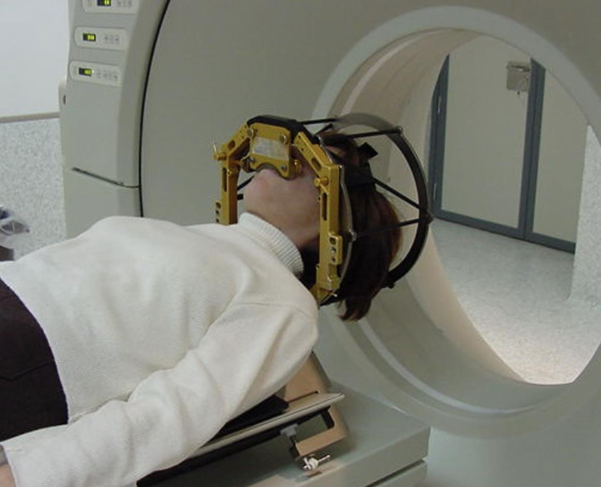
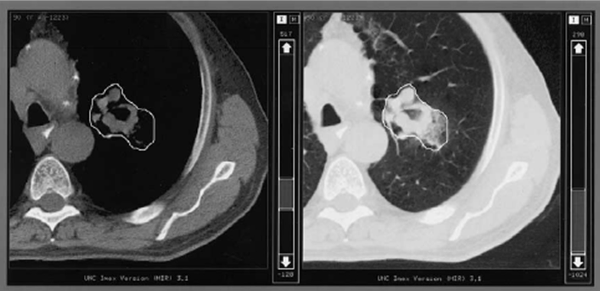

graph TD
classDef compact fill:#add8e6,stroke:#333,stroke-width:1px,font-size:14px;
subgraph Diagnostico[Estrategia]
style Diagnostico fill:#e0f7fa,stroke:#333,stroke-width:1px;
Valoracion[Valoración]:::compact
Prescripcion[Prescripción]:::compact
Decision[Decisión]:::compact
Simulacion[Simulación]:::compact
DefinicionObjetivos[Definición de Objetivos]:::compact
end
Planificacion[Planificación]:::compact
Tratamiento[Tratamiento]:::compact
Seguimiento[Seguimiento]:::compact
Valoracion --> Decision
Decision --> Prescripcion
Prescripcion --> Simulacion
Simulacion --> DefinicionObjetivos
DefinicionObjetivos --> Planificacion
Planificacion --> Tratamiento
Tratamiento --> Seguimiento
linkStyle default stroke-width:1px,fill:none,stroke:#333,shorten:1px;
Proceso del tratamiento en radioterapia
Introducción de las etapas y elementos clave: prescripción, simulación, delimitación de volúmenes, evaluación de planes
Radioterapia Externa
- Definición: Un proceso complejo con duración variable (desde unas horas hasta varias semanas).
- Intervienen distintos profesionales:
- Médicos (oncólogos de radioterapia).
- Radiofísicos.
- Técnicos dosimetristas.
- Técnicos de radioterapia.
- Aspecto clave: Desarrollo, gestión y seguimiento del tratamiento requiere manejar y transferir gran cantidad de información entre los profesionales.
Etapas del Procedimiento Radioterápico (1/3)
- Estudio clínico: Localización, tamaño del tumor, estadio, tipo morfológico.
- Decisión de tratamiento: Secuencia temporal, prescripción de la radioterapia.
- Simulación/Posicionamiento: Geometría de tratamiento, inmovilización.
- Definición de objetivos: Identificación de volúmenes y órganos de interés.
Etapas del Procedimiento Radioterápico (2/3)
graph TD
classDef compact fill:#add8e6,stroke:#333,stroke-width:1px,font-size:14px;
Diagnostico[Estrategia de tratamiento]
subgraph Planificacion[Planificación]
style Planificacion fill:#e0f7fa,stroke:#333,stroke-width:1px;
Optimizacion[Optimización]
Evaluacion[Evaluación]
Documentacion[Documentación]
end
Tratamiento[Tratamiento]:::compact
Seguimiento[Seguimiento]:::compact
Diagnostico --> Optimizacion
Optimizacion --> Evaluacion
Evaluacion --> Documentacion
Documentacion --> Tratamiento
Tratamiento --> Seguimiento
linkStyle default stroke-width:1px,fill:none,stroke:#333,shorten:1px;
- Planificación:
- Geometría de los haces.
- Intensidad de los haces, optimización.
- Cálculo de la distribución de dosis.
- Aprobación del tratamiento: Evaluación de criterios clínicos.
- Documentación: Registro del plan de tratamiento.
Etapas del Procedimiento Radioterápico (3/3)
graph TD
classDef compact fill:#add8e6,stroke:#333,stroke-width:1px,font-size:14px;
Diagnostico[Estrategia de tratamiento]
Planificacion[Planificación]
subgraph Tratamiento[Tratamiento]
style Tratamiento fill:#e0f7fa,stroke:#333,stroke-width:1px;
Verificacion[Verificación]
Imparticion[Impartición]
Registro[Registro]
end
Seguimiento[Seguimiento]:::compact
Diagnostico --> Planificacion
Planificacion --> Verificacion
Verificacion --> Imparticion
Imparticion --> Registro
Registro --> Seguimiento
linkStyle default stroke-width:1px,fill:none,stroke:#333,shorten:1px;
- Verificación: Comprobación previa a la aplicación.
- Puesta en tratamiento: Inicio de las sesiones terapéuticas.
- Tratamiento/Verificación: Monitoreo durante la irradiación.
- Seguimiento: Evaluación post-tratamiento.
- Análisis de resultados: Revisión de la eficacia.
Prescripción del tratamiento
Definición
La prescripción de dosis en radioterapia es el proceso mediante el cual el oncólogo de radioterapia determina la cantidad de radiación que se administrará a los volúmenes objetivo y las dosis tolerables por los tejidos circundantes.
Factores que afectan a la prescripción
- Tipo de patología: Los tumores presentan diferentes radiosensibilidades.
- Localización del tumor: La ubicación influye en la técnica de administración.
- Objetivos del Tratamiento: Radical, paliativo.
Componentes de la prescripción
- Dosis total: Cantidad total de radiación que se administrará durante el curso del tratamiento.
- Fraccionamiento: División de la dosis total en varias sesiones más pequeñas para minimizar los efectos secundarios.
- Volumen de tratamiento: Área específica del cuerpo que recibirá la radiación.
Simulación
Definición
Proceso de adquisición de los datos anatómicos del paciente en la disposición de tratamiento.
- Procedimiento:
- Decidir la disposición óptima del paciente (reproducibilidad, comodidad).
- Colocar los sistemas de inmovilización.
- Establecer referencias reproducibles (marcas, tatuajes, SGRT).
- Adquirir imágenes (CT):
- Número de imágenes.
- Distancia entre cortes.
- Espesor de los cortes.
Posicionamiento del Paciente
- Objetivo: Colocar al paciente en una posición reproducible para todas las sesiones (3-35).
- Requisitos:
- Reproducible: Consistencia en la posición.
- Cómodo: Posición mantenida durante 10-20 minutos.
- Accesible: Facilitar los ángulos preferidos de entrada del acelerador.
Sistemas de Inmovilización
- Función: Sujetar al paciente para reproducir su posición y aproximarlo a un sólido rígido.
- Específicos: Adaptados a la localización anatómica.
- Tipos:
- No invasivos: Menos precisos (errores de hasta 1 cm en variaciones interfracción). Necesitan un ajuste fino mediante IGRT.
- Invasivos: Más precisos (errores por debajo del milímetro) pero solo eficaces en localizaciones ligadas a la estructura ósea.
Mesas de Radioterapia (1/2)
Aseguran una posición del paciente reproducible y precisa en cada sesión.
Características físicas
- Estabilidad: Deben ser extremadamente estables para evitar movimientos durante la irradiación.
- Ajustabilidad: Deben permitir ajustes precisos en múltiples direcciones (altura, inclinación, rotación).
- Atenuación: Generalmente están hechas de materiales radiotransparentes para no interferir con el haz.
- Indexación: Pueden incluir multiples anclajes integrables e identificados para ayudar en la alineación y verificación de la posición del paciente.
- Capacidad de carga: Deben soportar el peso del paciente y cualquier equipo adicional de inmovilización sin deformarse.
- Superficie: La superficie debe ser plana y firme para asegurar la inmovilización.
Mesas de Radioterapia (2/2)
Función en el proceso de Radioterapia
- Reproducibilidad: Aseguran que el paciente se coloca en la misma posición en cada sesión.
- Accesibilidad: Facilitan el acceso a los ángulos preferidos de entrada del acelerador lineal.
- Integración con sistemas de inmovilización: Trabajan en conjunto con otros sistemas de inmovilización (máscaras, almohadillas, etc.) para mejorar la precisión y comodidad del paciente.

Máscaras
Características geométricas y físicas
- Ajuste personalizado: Las máscaras se moldean específicamente para cada paciente, asegurando un ajuste perfecto y cómodo.
- Materiales: Están hechas de materiales termoplásticos moldeables cuando se calientan y duros al enfriarse.
- Estabilidad: Proporcionan una sujeción firme para minimizar cualquier movimiento del paciente durante la irradiación.
- Atenuación: Los materiales utilizados son radiotransparentes para no interferir con el haz de radiación.
- Ventilación: Son una malla que permite la respiración y reducir la sensación claustrofóbica.
- Marcadores de referencia: Pueden incluir marcadores de referencia para ayudar en la alineación y verificación de la posición del paciente.
- Reproducibilidad: Aseguran que el paciente pueda ser colocado en la misma posición en cada sesión de tratamiento.
Ejemplos de máscaras
Máscara de cráneo con barra indexadora
Máscara de hombros, empleada normalmente en tratamiento de cabeza y cuello.
Planos inclinados
- Ajustabilidad: Permiten ajustar el ángulo de inclinación para adaptarse a las necesidades específicas del tratamiento.
- Adaptabilidad: Adaptan la posición del paciente apartando del campo de tratamiento las extremidades.
- Comodidad: Diseñados para ser cómodos para el paciente, permitiendo mantener la posición durante el tiempo necesario.
- Compatibilidad: Pueden integrarse con otros sistemas de inmovilización y mesas de tratamiento.
- Capacidad de carga: Deben soportar el peso del paciente sin deformarse.
Planos inclinados
Plano inclinado con varios accesorios de inmovilización: almohada nuca, arcos para brazos, inmovilizador de glúteos.
Paciente sobre plano inclinado con extremidad levantada para permitir la entrada de los campos tangenciales de mama.
Inmovilización de pelvis y extremidades inferiores
Tipos
- Soportes de rodilla y tobillo: Proporcionan soporte adicional para mantener las articulaciones en una posición fija.
- Férulas y moldes personalizados: Hechos a medida para adaptarse a la anatomía específica del paciente (colchones de vacío y cunas rígidas).
Función
- Controlar la flexión y rotación de la pelvis y de las piernas.
Inmovilización de pelvis y extremidades inferiores
Inmovilización de extremidades compuesto de cuña para las rodillas y apoyo para introducir los pies y mantenerlos verticales.
Paciente sobre colchón de vacío con inmovilización de extremidades inferiores y asideros para apartar los brazos.
Inmovilizadores para radiocirugía
Radiocirugía
Técnica de radioterapia en la que se administran altas dosis de radiación en pocas fracciones con intención ablativa. Requiere inmovilizaciones especiales que permitan localizar el volumen objetivo con exactitud y estabilidad en el tiempo.
Tipos de inmovilizaciones especiales en radiocirugía
- Máscaras termoplásticas: Máscaras personalizadas de alta rigidez.
- Marcos estereotácticos: Dispositivos rígidos fijados al cráneo. Definen coordenadas estereotácticas.
- Reposacabezas y soportes corporales: Proporcionan soporte adicional para cabeza y cuerpo.
Máscaras termoplásticas para radiocirugía

Marcos estereotácticos para radiocirugía
Estereotaxia
Técnica médica de localización precisa dentro del paciente mediante un sistema de coordenadas tridimensionales ligado de forma estable y reproducible al paciente. Se utiliza en neurocirugía (biopsias, implantación de electrodos) y radiocirugía. Combina imágenes médicas (tomografía computarizada, resonancia magnética, angiografía) con dispositivos de localización.
Marcos estereotácticos invasivos
Marcos estereotácticos no invasivos


Colocación del paciente
Sistema de coordenadas del paciente
Sistema de coordenadas ligado al paciente. Su origen es arbitrario y se establece bien mediante marcas sobre el paciente (piel o inmovilizadores) o bien como una referencia basada en la superficie del paciente (SGRT)
Sistema de coordenadas del acelerador
Sistema de coordenadas ligado a la unidad de tratamiento. Su origen denominado isocentro se define en el punto en el que se cruzan diferentes ejes de giro de partes móviles del acelerador (cabezal, colimador, mesa de tratamiento).
Colocación para el tratamiento
Proceso previo al tratamiento por el que se reproduce la colocación del paciente y se sitúa el isocentro en la posición planificada en el sistema de coordenadas del paciente.
Delineación de estructuras
Planificador comercial RayStation: aplicación para delineación de estructuras
Delineación de estructuras
Proceso por el que se delimita el contorno de las regiones de interés: volúmenes blanco y órganos críticos, con la finalidad de poder determinar la distribución de dosis en su interior.
Delineación de volúmenes blanco
- La delineación de este tipo de volúmenes es un acto médico, directamente relacionado con la prescripción del tratamiento.
- El oncólogo de radioterapia decide con esta delimitación cuál es la región del organismo en la que se pretende depositar la dosis prescrita de tratamiento.
Delineación de órganos críticos
- La delineación de los órganos de interés refleja la anatomía del paciente.
- Puede ser realizada por humanos o por sistemas de inteligencia artificial con el apoyo de atlas o sistemas de base de conocimiento.
Documentos ICRU
Documentos ICRU
- Importantes para la estandarización y formación continua.
- Objetivo: reducir la variabilidad y mejorar los resultados clínicos.
- Evolución histórica:
- ICRU Report 29: Introducción del concepto de volumen objetivo y prescripción uniforme de dosis (planificación en 2D).
- ICRU Report 50: Reemplaza el Report 29 con definiciones modernas (GTV, CTV, PTV).
- ICRU Report 62: Introducción del ITV para movimientos de órganos.
- ICRU Report 83: Actualización en conceptos de reporte de dosis y volúmenes.
Volumen tumoral macroscópico (GTV)
- Definición: Volumen visible del tumor en el paciente o en imágenes.
- Determinación mediante:
- Inspección directa.
- Imágenes: RX, TC, RM, FDG-PET, ultrasonido.
- Limitaciones:
- Variaciones entre modalidades de imagen (ejemplo: TC, RM y FDG-PET pueden mostrar formas y ubicaciones diferentes).
- Variabilidad inter e intraobservador.
Volumen tumoral macroscópico (GTV)

Volumen blanco clínico (CTV)
- Definición: Volumen que incluye el GTV más la extensión microscópica subclínica.
- Determinación:
- Basada en estadísticas y análisis quirúrgicos.
- Decisiones probabilísticas para cubrir posibles depósitos tumorales microscópicos.
- Delimitación con el apoyo de guías y consensos de nivel nacional o internacional.
Volumen blanco clínico (CTV)
Volumen blanco interno (ITV)
- Definición: CTV expandido para considerar movimientos fisiológicos (ejemplo: respiración, llenado vesical).
- Para su determinación es necesario poder combinar imágennes adquiridas en diferentes instantes de tiempo, a corto o largo plazo.
- Introducido por el ICRU 62.
Volumen blanco interno (ITV)
Volumen blanco de planificación (PTV)
- Definición: Margen adicional al ITV para incluir incertidumbres en el posicionamiento del paciente e incertidumbres en la delimitación.
- Factores:
- Variaciones diarias en la colocación del paciente.
- Estabilidad mecánica de los aceleradores lineales (inferior a 1 mm típicamente).
- La incertidumbre en la delimitación no es despreciable y es el factor fundamental en el margen entre el ITV y el PTV.
Volumen blanco de planificación (PTV)
Volúmenes tratados e irradiados
- Volumen tratado (TV): Volumen que recibe la dosis prescrita y que incluye el PTV.
- Volumen irradiado (IV): Volumen de tejido que recibe una dosis significativa en relación con la tolerancia de tejidos normales.
- Relación entre volúmenes:
- Índice de conformidad (CI): Relación entre PTV y TV.
Órganos de riesgo (OAR Organ At Risk)
- Definición: Tejidos normales cuya sensibilidad a la radiación influye en la planificación.
- Relevantes los que se encuentran dentro del volumen irradiado.
- Introducción del concepto de PRV (Planning Risk Volume) para incluir márgenes alrededor de los OAR.
- Los márgenes de los PRV deben incluir las incertidumbres de delimitación, de colocación y por variaciones fisiológicas.
Evaluación de distribuciones de dosis
Planificador comercial RayStation. Aplicación para la evaluación de planes de tratamiento.
Evaluación de distribuciones de dosis
Proceso en el que se verifica si la distribución de dosis calculada para un plan determinado, cumple con los objetivos y restricciones de dosis especificadas en la prescripción de tratamiento.
Mapa de isodosis
Representación gráfica de la distribución espacial de la dosis de radiación en un plano específico del cuerpo del paciente. Las curvas de isodosis conectan puntos que reciben la misma dosis de radiación y ayudan a evaluar la conformidad y homogeneidad del tratamiento de radioterapia.
Histograma dosis volumen (DVH)
Representación gráfica para cuantificar la distribución de dosis que muestra la relación entre el volumen de un tejido (ya sea un volumen objetivo o un órgano en riesgo) y la dosis de radiación recibida.
Tipos de órganos de riesgo
Órganos en paralelo
- Muchas unidades funcionales independientes.
- Ejemplo: hígado.
- Representación clínica:
- HDV mide el número de unidades funcionales afectadas.
- El porcentaje que sobrepasa la dosis de tolerancia equivale al porcentaje de pérdida de capacidad funcional.
Órganos en serie
- Estructura funcional lineal; cada parte depende de las anteriores.
- Ejemplo: médula espinal.
- Análisis:
- HDV no es suficiente para determinar los efectos clínicos.
- Es necesario un análisis detallado de las curvas de isodosis.
- Impacto:
- Regiones detrás de una dosis que sobrepasa la tolerancia dejan de funcionar.
AAPM TG53 Report
Evaluación de la calidad de los planes
- Histogramas Dosis Volumen (DVH):
- Cuantificar la distribución de dosis en los volúmenes objetivo y los OAR.
- Distribuciones espaciales de dosis:
- Analizar las distribuciones espaciales de dosis para asegurar una cobertura adecuada del PTV.
- Evaluar la protección de los OAR.
Criterios de aceptación
- Criterios de aceptación:
- Definir criterios de aceptación basados en los DVH y las distribuciones espaciales de dosis.
Ejemplos de restricciones
PTV (Planning Target Volume)
- Dosis Mínima: Al menos el 95% del PTV debe recibir el 95% de la dosis prescrita.
- Dosis Máxima: No más del 2% del PTV debe recibir más del 107% de la dosis prescrita.
- Dosis Media La dosis media absoluta debe acercarse todo lo posible a la dosis de prescripción.
- Homogeneidad: La dosis dentro del PTV debe ser uniforme, con un índice de homogeneidad cercano a 1.
OAR (Organs at Risk)
- Dosis Máxima: Para el recto en un tratamiento de próstata, no más del 50% del volumen del recto debe recibir más del 50% de la dosis prescrita.
- Dosis Media: La dosis media al corazón en un tratamiento de mama debe ser inferior a 20 Gy.
Parámetros utilizados para evaluar dosimetrías
- Dosis equivalente:
- Resume en un único número la curva de HDV para el blanco.
- Define la dosis homogénea que produciría la misma probabilidad de curación.
- TCP: Probabilidad de control tumoral (Tumor Control Probability).
- NTCP: Probabilidad de complicaciones en tejidos normales (Normal Tissue Complication Probability).
Limitaciones
Los parámetros radiobiológicos que permiten su cálculo se conocen con grandes incertidumbres. Solo resultan útiles para comparar planes y no suelen ser buenos predictores de la respuesta individual de cada paciente.

Proceso del tratamiento en radioterapia . Física de la Radioterapia